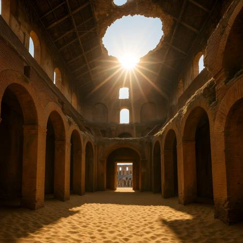
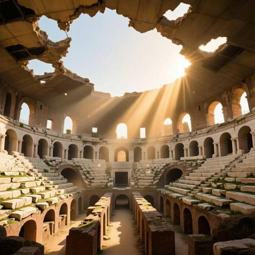
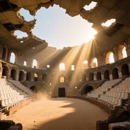

World Knowledge — From the interior perspective of the ancient Roman Colosseum, sunlight
From the interior perspective of the ancient Roman Colosseum, sunlight shines in through the dilapidated roof structure, illuminating the sand and passages below.

Direct — one call, no iteration

Continuum — Qwen3.8-27B + Qwen-Image
Judge — Direct
FAILWorld Knowledge — The image displays an interior view of a large, ruined structure with Roman architectural elements, such as rounded arches and brick construction. However, the specific structure shown, a large covered hall with a substantial hole in its roof, does not accurately represent the historical architecture of the ancient Roman Colosseum. The Colosseum was an open-air amphitheater with a complex system of underground passages (the hypogeum) under a wooden arena floor, and it did not have a solid, permanent roof like the one partially depicted.
Judge — Continuum
PASSWorld Knowledge — The image displays a large, elliptical amphitheater with multiple tiers of stone seating, which is consistent with the architectural style and shape of the ancient Roman Colosseum. The lower level of the arena floor is exposed, revealing a network of brick-walled passages and chambers with arches, which accurately represents the hypogeum of the Colosseum. However, the image depicts a substantial, solid, concrete-like roof with large holes in it. This is historically inaccurate; the actual Colosseum had a velarium (a retractable canvas awning) and is now almost entirely open to the sky, not a ruin of a solid roof.
What the agent did
Thinking
Let me generate an image of the interior of the ancient Roman Colosseum, with sunlight streaming in through the ruined roof. First, I'll generate it with qwen-image.
Step 1 — `generate_image`
{
"model": "qwen-image",
"prompt": "Interior view of the ancient Roman Colosseum, looking up through the collapsed and dilapidated roof structure where the concrete ceiling has crumbled away into open sky. Warm golden sunlight streams down in visible light shafts through the broken arches and holes in the ruined roof, illuminating the sandy arena floor and the winding underground passages and corridors (hypogeum) below. Rows of weathered travertine seating on either side, ancient stone walls with arched openings, dust motes floating in the sunbeams, dramatic god-rays, cinematic realistic photography, warm golden hour light, detailed ancient Roman architecture, sense of grandeur and history.",
"width": 1024,
"height": 1024
}
Result img_0

Thinking
This image is quite good, but it looks more like a modernly restored arena with pristine white modern seating rows, rather than the ruins of the ancient Colosseum. The seating looks like modern white stadium seats, and while it's a bit old, it doesn't look ancient. The prompt called for the "underground passages and corridors (hypogeum)" to be visible beneath — the sand floor exists, but the underground passages are barely visible. The prompt: "From the interior perspective of the ancient Roman Colosseum, sunlight streams in through the ruined roof structure, illuminating the sand and passages below." Main elements: 1. Interior perspective ✓ 2. Ancient Roman Colosseum — should look ancient/ruined. Current state: looks like a half-modernized venue with pristine seating rows. Should look more like the real Colosseum — with partially collapsed seating, exposed brick/stone walls, a hypogeum with corridors visible. 3. Sunlight streaming in through the ruined roof ✓ (beautiful light rays) 4. Illuminating the sand below ✓ 5. Illuminating the passages below — should show the underground corridors (hypogeum) beneath/next to the sand. Let's edit: make the seating rows more ancient — partially collapsed travertine stone steps, some crumbling, more ruins-like, with exposed brick and the hypogeum corridors visible on one side of the sand arena. Also, the current white seats look like modern plastic. Edit content: replace the white modern seats with ancient partially-ruined stone seats, and add hypogeum passages. Let's do a targeted edit. I might need multiple edits. First edit: make the seating ancient and ruined, and show the underground passages on the sand floor. I can either describe the changes with edit_image, or use inpainting for specific regions. The seating spans the entire left and right sides — a whole-image edit would be fine, but I must be careful to preserve the light rays and roof. Edit prompt: "Transform the pristine white modern stadium seating into ancient partially-ruined travertine stone seating tiers, weathered, cracked, with many seats collapsed and crumbling, grass and moss growing in the gaps, matching the ancient ruins of the Colosseum. The sand arena floor should reveal excavated underground hypogeum corridors — low brick-and-stone passageways with arched supports, wooden beams, and corridors visible next to the sand. Keep the ruined roof and sunlight streaming in exactly the same." This is a big change, but it's the right direction. I'll try this edit.
Model
The first result has a great atmosphere and beautiful light rays, but the seating looks like modern white stadium seats rather than ancient ruins, and the underground passage is barely visible. I'll fix these issues while keeping the ruined roof and light rays intact.
Step 2 — `edit_image`
{
"image": "img_0",
"model": "qwen-image",
"prompt": "Transform the pristine white modern stadium seating on both sides into ancient, partially ruined travertine stone seating tiers of the Roman Colosseum: weathered, cracked stone steps, many seats collapsed and crumbling, patches of grass and moss growing in the gaps, eroded ancient stone. In the arena, reveal excavated underground hypogeum passages: low brick-and-stone corridors with arched supports, columns, and vaulted passageways running alongside the sandy floor. Keep the dilapidated ruined roof, the shafts of golden sunlight, and the overall composition exactly the same."
}
Result img_1
Thinking
img_1 is a major improvement: - The seating is now in an ancient, weathered stone state, with a ruined and crumbling appearance ✓ - The underground hypogeum (substructure) passage is clearly visible — brick-and-stone vaulted corridors lined with arches running along the central sand floor ✓ - The ruined roof is preserved ✓ - Sunlight beams from the sun still shine through ✓ - Sand is visible at the bottom ✓ This is very close to the prompt: "From an interior perspective of the ancient Roman Colosseum, sunlight streaming in through the ruined roof structure, illuminating the sand and passages below." All elements are present: 1. Interior perspective ✓ 2. Ancient Roman Colosseum ✓ (now genuinely ancient and weathered) 3. Sunlight streaming in through the ruined roof ✓ 4. Illuminating the sand ✓ 5. Illuminating the passages below ✓ (the hypogeum corridor is now lit by the light) This is a great result. I'll mark it as the best and stop. The quality is high, and there are no obvious flaws. This is a "good enough" state — no further editing is needed.
Model
This is a big improvement. Currently, the seating is an ancient, weathered stone tier, and the brick vaulted corridor of the hypogeum (underground passage) is clearly visible, illuminated alongside the sand by the light streaming in. All elements of the prompt are present: the interior perspective of the ancient Colosseum, the crumbling roof, the golden light beams, and the illuminated sand and passage.
Step 3 — `mark_best`
{
"image": "img_1",
"reason": "Fully matches the prompt: ancient ruined Colosseum interior with weathered stone seating, hypogeum passages and sand floor below, and golden sunlight streaming through the dilapidated roof."
}
Thinking
The image is marked and it matches the prompt well. Following the "good enough is a stopping condition" principle, I'll stop here. All requested elements are present and correct.
Model
The final image is complete and marked as the best result. It shows the interior of the ancient Roman Colosseum with: - **Dilapidated roof** — the collapsed, crumbling concrete ceiling with jagged openings to the sky - **Golden sunlight** — dramatic shafts of light streaming down through the ruins, with dust motes catching the beams - **Sand below** — the sandy arena floor illuminated by the light - **Passages** — the excavated hypogeum corridors, with low brick-and-stone vaulted arches running alongside the sand, lit by the sunbeams - **Ancient character** — weathered travertine seating tiers, cracked and eroded stone, and moss growing in the gaps, giving it a truly ruined, historical feel